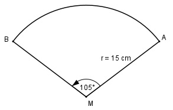
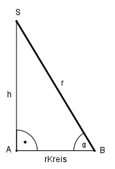

Aufgabe 170 Aus einem Kreisausschnitt mit dem Radius r = 15 cm ist ein Kegel gebogen worden. Wie groß ist dessen Volumen V?

Länge des Bogens = Umfang der Kegelgrundfläche 2 * π * r * α b = ---------------- = 360° 2 * π * 15 cm * 105° = ---------------------- = 27,5 cm = U 360° U = 2 * π * r | :2 * π U 27,5 cm rKreis = ------- = ----------- = 4,4 cm 2 * π 2 * π
Im Dreieck ABS: Satz von Pythagoras: r2 = rKreis2 + h2 |-rKreis2 h2 = r2 - rKreis2 = 152 cm2 - 4,42 cm2 = = 205,6 cm2 |√ h = 14,3 cm AG * h π * rKreis2 * h V = --------- = ----------------- = 3 3 π * 4,42 cm2 * 14,3 cm = ------------------------ = 289,8 cm3 3